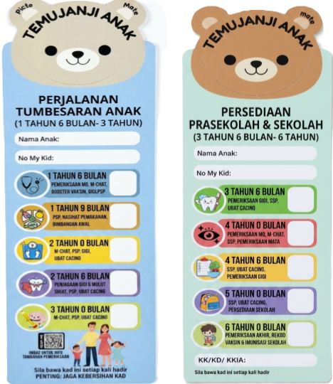

Kami faham, menguruskan jadual harian dan temu janji klinik anak boleh menjadi sangat mencabar buat mak & ayah!
❓ SOALAN LAZIM (FAQ)
💡 Kenapa perlu check perkembangan anak ke klinik?▼
Pemberian vaksin pada Fasa umur 1.5 bukanlah bermaksud hari terakhir pemeriksaan anak. Pemriksaan sehingga umur 6 tahun amat kritikal bagi perkembangan kognitif, motor, dan pertuturan kanak-kanak. Kesan awal dapat mengelakkan isu lewat (delay).
💡 Bagaimana sistem peringatan bertindak?▼
Sistem kami akan terus menyambungkan anda ke Google Calendar. Setelah anda menekan butang 'Simpan', borang temujanji akan terbuka secara automatik. Anda hanya perlu tekan butang 'Save' untuk tetapkan peringatan automatik (1 minggu, 1 hari, dan 2 jam sebelum temujanji).
📌 Apakah maksud singkatan P&P pada bookmark?▼
P&P bermaksud Perkembangan dan Pertumbuhan. Ia merujuk kepada pemantauan fizikal, berat badan, ketinggian, serta pencapaian kemahiran motor dan kognitif anak mengikut jadual umur klinik.
📌 M-CHAT tu pula apa jenis pemeriksaan?▼
M-CHAT ialah singkatan bagi Modified Checklist for Autism in Toddlers. Ia merupakan alat saringan ringkas berbentuk borang soal selidik untuk menilai risiko autisme pada kanak-kanak berusia 16 hingga 30 bulan.
MENGENAI PICTO MATE

Mudah • Pantas • Sentiasa Ingat
PICTO MATE ialah ekosistem Penanda Buku Pintar & Peringatan Digital untuk memudahkan urusan temu janji klinik anak anda:
• PICTO:Penanda buku fizikal berkod warna dan emoji. Faham tujuan temu janji anak dalam 3 saat sahaja! Menggunakan Sistem imbas QR pintar untuk memahami keperluan & kepentingan setiap temujanji anak
• MATE:Pemeneman setia ibu ayah dan anak-anak sepanjang temujanji. Integrasi teknologi untuk masukkan peringatan temu janji terus ke kalendar telefon anda secara automatik (ibu bapa perlu ada gmail untuk menggunakan fungsi ini ).
Dua Fungsi: Boleh diselit dalam buku kesihatan anak, atau ditampal pada peti sejuk rumah menggunakan magnet!
🔖📔📆📱💡
PEMERIKSAAN ANAK
👶📈🧒Milestone Dashboard
Sila pilih peringkat umur anak mak & ayah:
PERKEMBANGAN
🚶♂️🎨🗣️Jom Semak Perkembangan Anak!
Klik pada kotak perkembangan yang anak sudah capai: 😊
0/4 Dicapai (0%)
🩺 Apa Yang Klinik Akan Buat?
🚨 RED FLAGS (Sila Alert!):
🚨 TANDA BAHAYA UTAMA
🚨⚠️🚨
Mak & ayah, jika anak menunjukkan tanda-tanda kejatuhan atau regresi ini pada bila-bila masa fasa umur, sila buat pemeriksaan segera:
⚠️ Kehilangan Kemahiran Spontan:Anak tiba-tiba langsung tak bercakap atau bertindak buat benda yang pernah dia kuasai sebelum ini.
⚠️ Tiada Tindak Balas Sosial:Tiada eye-contact langsung, tidak berpaling bila nama dicari, atau mengasingkan diri sepenuhnya.
📅 SET TEMUJANJI
⏰📅💌Digital Reminder Ecosystem of PICTO MATE
Sila pilih tarikh dan waktu temu janji klinik seterusnya. Maklumat peringatan 3-Tahap (1 minggu, 1 hari, 2 jam) akan auto-aktif!